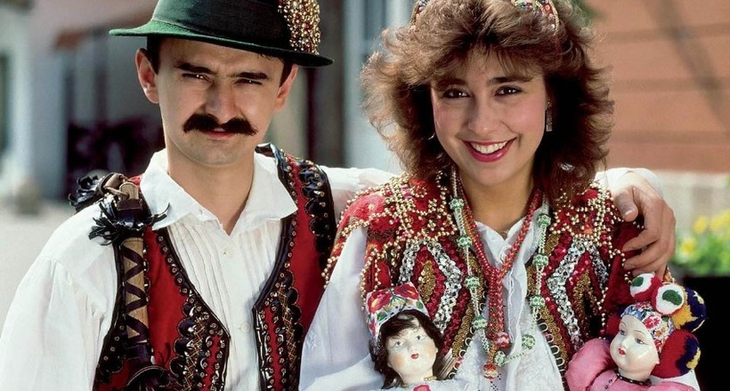
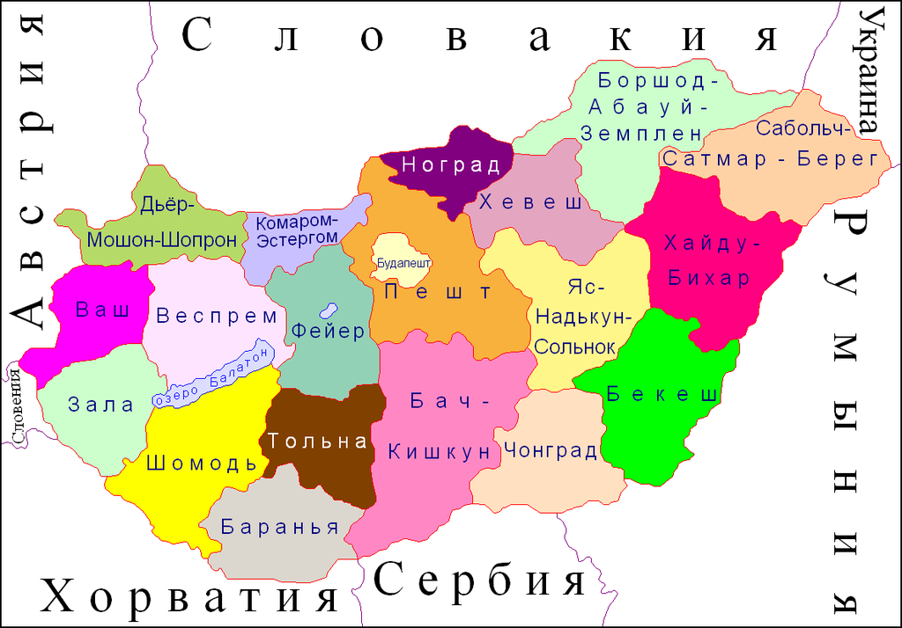

Народности
Большинство жителей современной Венгрии — венгры (92,3 %).
Родной язык почти 95 % жителей Венгрии — венгерский.
Наиболее значительные национальные меньшинства — немцы (1,2 %), цыгане (1,1 %—5 %), румыны (0,8 %), евреи (0,5 %), словаки (0,4 %), хорваты (0,2 %) и сербы (0,2 %).
Большинство верующих — католики (51,9 %). Также есть общины кальвинистов (15,9 %), лютеран (3 %), греко-католиков (2,6 %), других христиан (1 %). Атеисты — 25,6 %.
В соседних странах проживают многочисленные венгерские общины — особенно в Словакии, Украине, Румынии (Трансильвании), Сербии (Воеводине), Хорватии.

Факты
Венгрия была основана в 896 году, что делает ее одним из древнейших государств Европы.
Венгерское пресноводное озеро Балатон – крупнейшее в Центральной Европе и очень популярное среди туристов. Его иногда называют «Венгерским морем».
Климат
Климат Венгрии умеренно-континентальный с хо╜лодной зимой и теплым летом. Морские ветры лишь изредка проникают вглубь страны. Средняя температура июля в Будапеште 22 oС, января -1 o, иногда выпадают дожди.